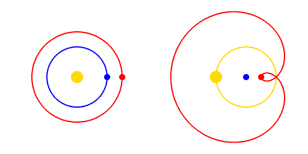

Kapitel 3 Philosophy of science
3.1 Paradigm och falsifiering
Kuhn och Popper.
3.2 Den kopernikanska omvälvningen

Animation: Motion of Sun, Earth, and Mars according to heliocentrism (left) and to geocentrism (right), before the Copernican-Galilean-Newtonian revolution. Note the retrograde motion of Mars on the right. Yellow dot, Sun; blue, Earth; red, Mars. (In order to create a smooth animation, it is assumed that the period of revolution of Mars is exactly 2 years, instead of the actual value, 1.88 years). The orbits are assumed to be circular in the heliocentric case. Från Wikipedia, “Copernican Revolution”.
3.3 Ontology
Consider the context of science.
Circle of Life
Figur: Circle of Life. It is based on analysis of small sub-unit rRNA sequences sampled from about 3,000 species from throughout the Tree of Life. From Life: The Science of Biology, 9th ed., by D. Sadava, D. M. Hillis, H. C. Heller, and M. Berenbaum (Sinauer Associates and W. H. Freeman, 2011).
3.3.1 Scale
I filmen “Powers of Ten” zoomas perspektivet från det mikroskopiska till det kosmiska, med skalan noterad i tiopotenser som referens:
POWERS OF TEN © 1977 EAMES OFFICE LLC (Available at www.eamesoffice.com)
3.3.2 Statististisk termodynamik och betydelsen av N
Eller, Schrödinger utan katten.
En utgångspunkt för biologisk skala är den statistiska mekaniken. För att biologiska system skall fungera med precision måste deras funktioner bestå av interaktioner mellan en tillräcklig mängd små partiklar (atomer, molekyler).
3.3.3 Perspektiv på storlek
I denna interaktiva animation kan du klicka dig fram för att jämföra skalan mellan olika objekt.
Screenshot från animationen “Scale of the Universe” av Cary Huang.
I filmen “Powers of Ten” zoomas perspektivet från det mikroskopiska till det kosmiska, med skalan noterad i tiopotenser som referens:
POWERS OF TEN © 1977 EAMES OFFICE LLC (Available at www.eamesoffice.com)
Nedan följer en film som jämför storleken på olika planeter och stjärnor:
3.3.4 Sambandet mellan hjärtfrekvens och livslängd
I boken “Scale” tas korrelationen mellan hjärtfrekvens och livslängd upp, vilket kan illustreras med följande figur:
Figur: Hjärtfrekvens och livstid hos däggdjur. X-axeln är i Log2-skala, vilket innebär att en enhets skillnad motsvarar en fördubbling av hjärtfrekvensen. En människa har hjärtfrekvens 60 slag/minut och en hamster 450 slag/minut.
Vi ser att människan har en något längre livslängd än vad som skulle förutsägas av vår medelhjärtfrekvens.
Data för figuren kommer från Thayer Watkins vid San José State University, som också skriver: A useful line of analysis is to consider the effect of scale changes for creatures which are similar in shape and only differ in scale. As the scale of an animal increases the body weight and volume increase with the cube of scale. The volume of blood flow required to feed that bulk also increases with the cube of scale. The cross sectional area of the arteries and the veins required to carry that blood flow only increases with the square of scale. There are other area-volume relationships which impose limitations on creatures.
3.3.5 Notering
Genom evolutionen varierar en arts storlek beroende på temperatur och andra omgivningsfaktorer.
3.3.6 Evolutionens hastighet
- Se artikeln om tid
3.3.7 Snabb anpassning
Snabb evolution vid högt selektionstryck.
Epigenetik.
3.4 Resources
Bok Scale: The Universal Laws of Growth, Innovation, Sustainability, and the Pace of Life in Organisms, Cities, Economies, and Companies av Geoffrey West. Boken är omtalad och jag läste första kapitlet men blev inte fast. Kanske värt ett till försök?
Circle of Life med tidsperioder inlagda